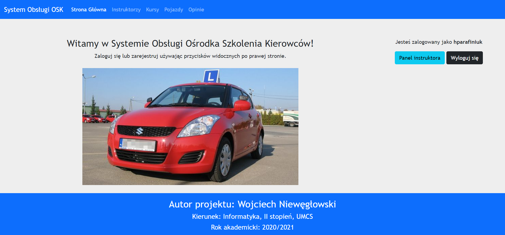

Aby zalogować się w Systemie Obsługi Ośrodka Szkolenia Kierowców należy na Stronie Głównej Systemu kliknąć w przycisk "Zaloguj się". Zostaniemy przeniesieni na podstronę, na której wyświetli się formularz logowania:
Należy wypełnić powyższy formularz odpowiednimi i poprawnymi danymi.
W polu "Login" należy wpisać swoją nazwę użytkownika, którą podaliśmy podczas rejestracji.
W polu "Hasło" wpisujemy swoje hasło, które również podaliśmy przy rejestracji.
Po uzupełnieniu danych klikamy "Zaloguj się".
Przykładowo wypełniony formularz logowania:
Po kliknięciu przycisku "Zaloguj się" zostaniemy przeniesieni na Stronę Główną Systemu,
która będzie dostosowana do danego typu konta.
Gdy zalogujemy się na konto Administratora Strona Główna będzie wyglądać następująco:

Natomiast, gdy zalogujemy się na konto Instruktora ujrzymy:

Jeśli zalogujemy się na konto Kursanta, przywita nas następujący wygląd Strony Głównej:
Jak widzimy są małe różnice, ale ważne. Zależnie od danego typu konta mamy dostęp do innego Panelu.
Poszczególne Panele zostaną omówione w dalszej części Instrukcji.